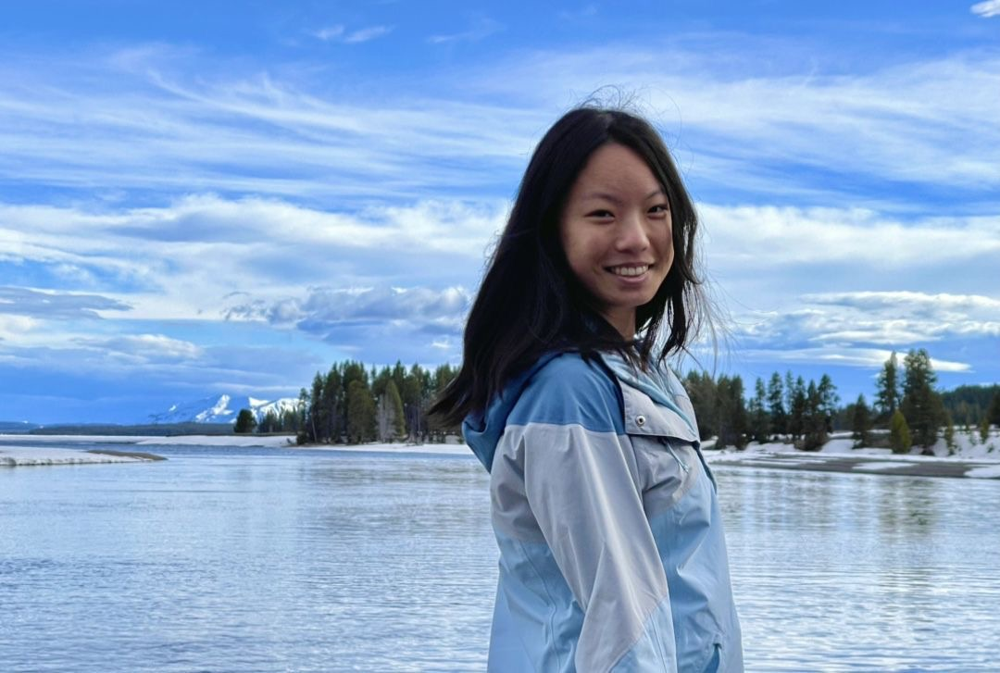

Bonnie Wu
Welcome to my website! My name is Bonnie Wu and I am currently a junior in the computer science program at Texas A&M!
As a child, I loved group work and loved wondering and asking about anything that had piqued my curiosity. This has persisted throughout my academic career, as in class, I am earnest, curious, and work well in teams! Plus, I am flexible and enthusiastic about learning new things. I am interested in just about anything and everything . . . except maybe bugs.
Most of my time is spent studying and coding, but in my free time, I enjoy baking (not cooking), bouldering, and grabbing food with my friends. I also have a crippling addiction to pokemon go
I started baking very frequently during the pandemic and it has persisted as a kind of therapy for me! I also tried cooking but I chronically burn or undercook food, and I dislike the prep work like chopping vegetables or peeling garlic. On the other hand, when baking, I love testing out new recipes and tweaking them to my tastes! I also have a sweet tooth so being able to have dessert whenever I want is great! Some of my favorite recipes are crepe cakes, custard buns, and chocolate chip cookies!
I started bouldering when I came to TAMU. I saw the bouldering wall at the recreation center, decided to try it, and the rest is history! I now go to Stone Co, College Station's local bouldering gym, and love it! Bouldering is a great way to make friends and get some exercise.
Lastly, I have always grown up around food, and my family and family friends have always used food and potlucks as a time for bonding and closeness. Even simple things such as eating around the table as a family. I use the same concept when catching up with friends or to make new ones! That is why getting food with my friends is one of my favorite pastimes and one I hold very close to my heart.
Please use the navigation bar on the left side to delve deeper into my website and enjoy the ride! You can also contact me using the links below!
My GitHub My LinkedIn